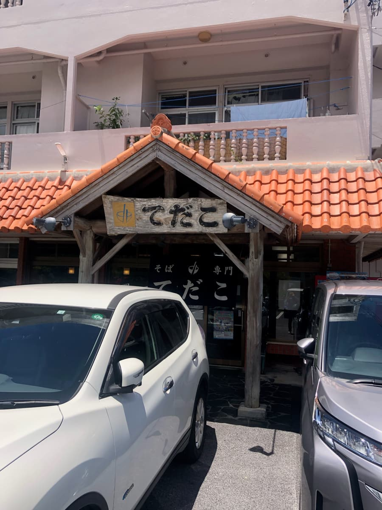
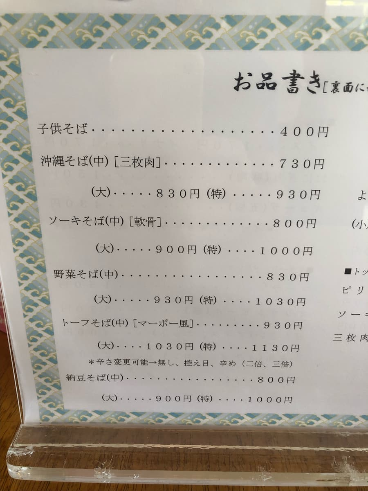
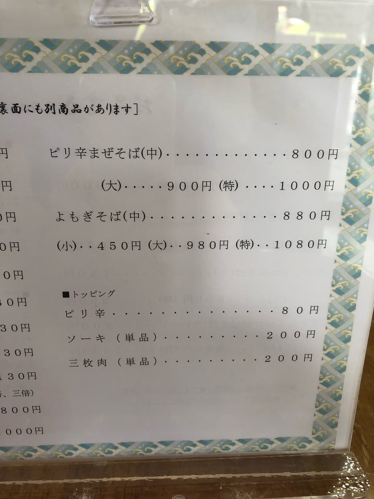
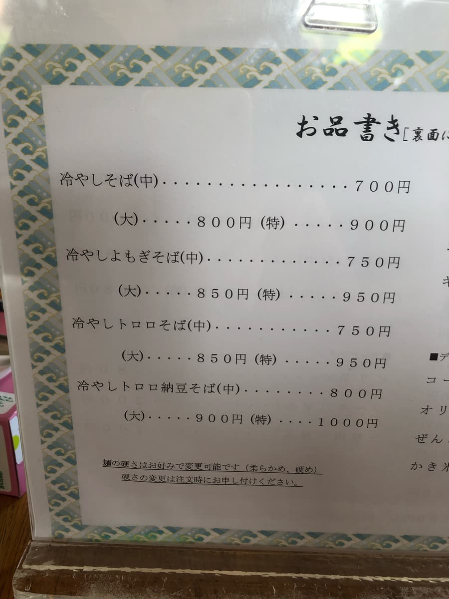
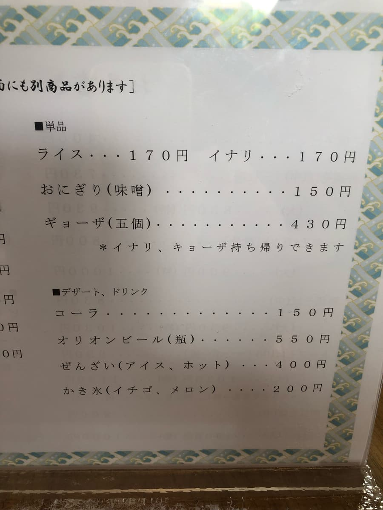
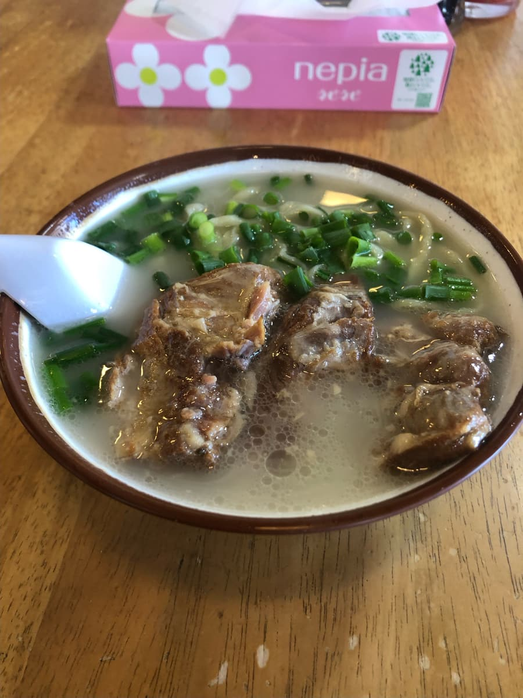
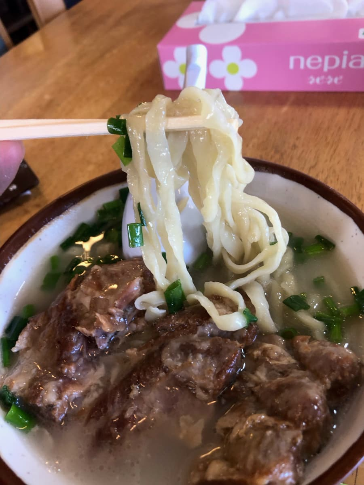

※这篇文章是用Claude 3.5 Sonnet的AI写成后再由我部分补写的。
这次要介绍位在浦添市仲间的「面专门 太阳」。在冲绳面巡礼中又有了新发现喔！

首先，店家的外观就让人印象深刻。红瓦屋顶上挂着「太阳」的招牌非常吸睛。冲绳氛围满分呢😍
走进店里，因为正好是午餐时间，挤满了在地人和观光客。人气店的气氛强烈地传了过来呢🎵 热闹就是好店的证明。（这次店里客人很多，没办法拍店内的照片，不好意思🙏）




我从菜单中点了经典的「软骨排骨面」😋

好了，期待已久的「软骨排骨面」登场！
首先品尝汤头。猪骨基底的汤头非常浓郁滑顺，口感柔和。还算好喝，水准偏高😊

接着吃面。据说「太阳」的面是自制的宽面。特色是Q弹的口感，和汤头很融合。入喉也很顺，让人一口接一口停不下来呢。
然后是主要配料软骨排骨。炖得软嫩，用筷子就能夹散。不过还称不上完美，也吃得到一点偏韧的部分。
整体来看，「面专门 太阳」的「软骨排骨面」是不输给推荐店水准的一碗。特别是汤头和面的平衡非常绝妙，充分展现了冲绳面的魅力。
其他菜色也很让人好奇呢。「微辣拌面」和「艾草面」看起来也很好吃。下次想挑战看看其他菜色😆
评分（10分/15分）：综合来看，「面专门 太阳」可以说是接近推荐等级的店。特别是汤头和面非常出色，对冲绳面爱好者来说是无法抗拒的一碗。地点也很方便，来到浦添市时请务必顺道来看看。可以混在在地人之中，在热闹的气氛里享用道地的冲绳面喔。各位冲绳面爱好者，「面专门 太阳」是一家必须笔记起来的店！下次也请大家务必来造访看看。一定能发现冲绳面新的魅力😉
面：★★★✬☆（3.5）
汤头：★★★✬☆（3.5）
配料：★★★☆☆（3）